. sysuse auto, clear
. sc mpg price, scheme(`scheme')
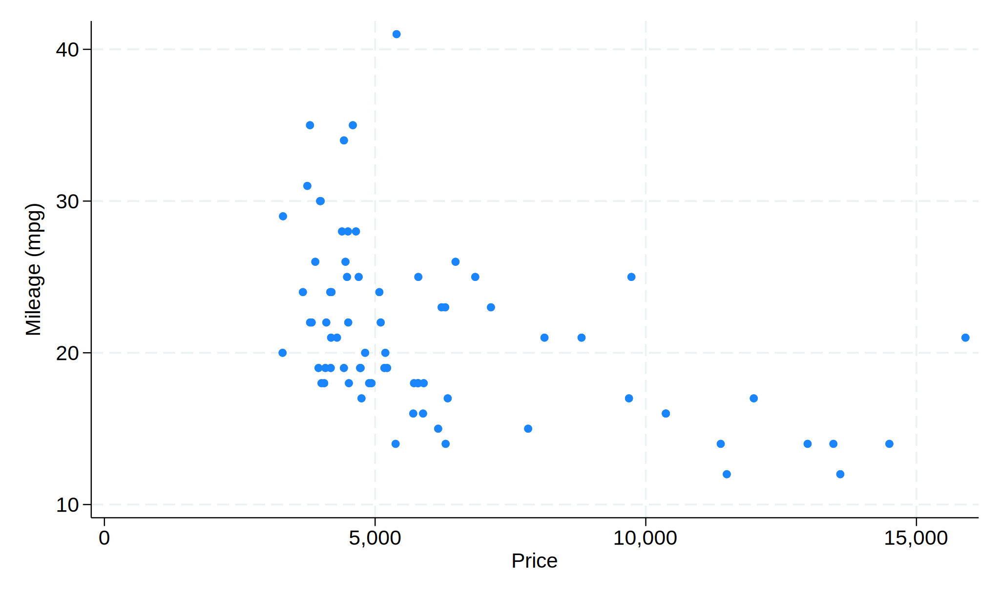
. sc mpg price weight, scheme(`scheme')
. sc mpg price || mband mpg price, scheme(`scheme')
. sysuse sandstone, clear
. sc depth northing if collection == 1 || ///
> sc depth northing if collection == 2, scheme(`scheme')
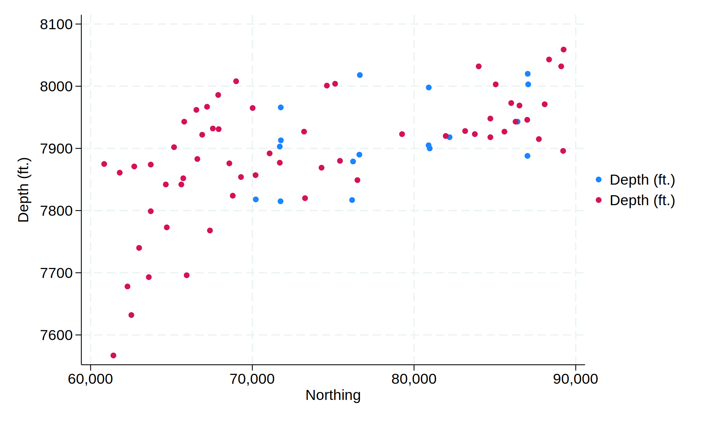
. sysuse uslifeexp, clear
. line le_wfemale year || line le_bfemale year, ///
> legend(label(1 "White females") ///
> label(2 "Black females")) ///
> title("Life expectancy") ///
> note("U.S. life expectancy for females, 1900-1999") ///
> scheme(`scheme')

. sysuse nlsw88, clear
. gen divorced = married == 0 & never_married == 0 if !missing(married, never_ma
> rried)
. collapse (mean) married never_married divorced, by(age)
. replace married = married*100
. replace never_married = never_married*100
. replace divorced = divorced*100
. label var married "married"
. label var never_married "never married"
. label var divorced "divorced or widowed"
. twoway line married never_married divorced age
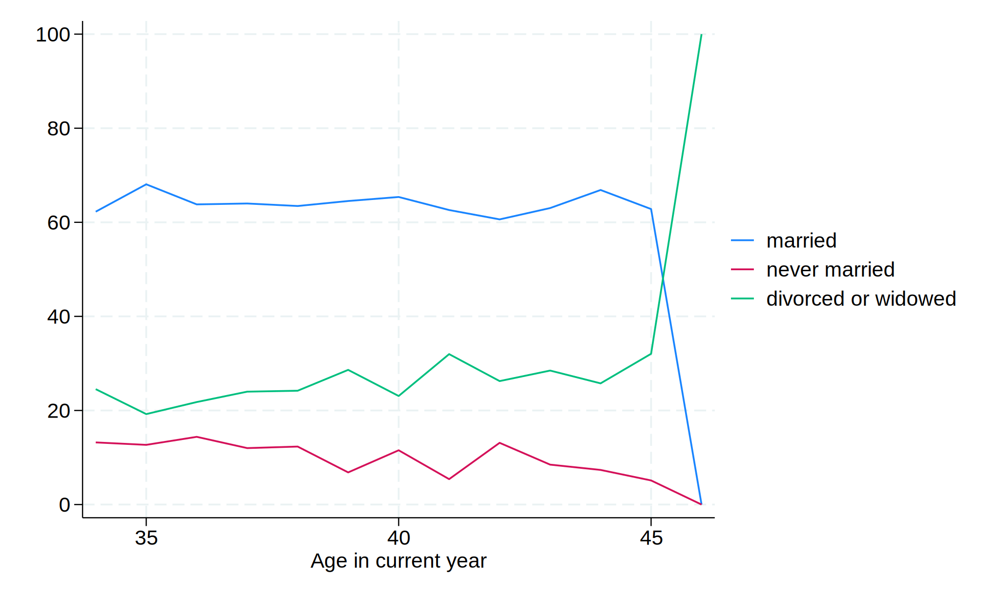
. sysuse sp500, clear
. twoway bar open date in 1/50, scheme(`scheme')
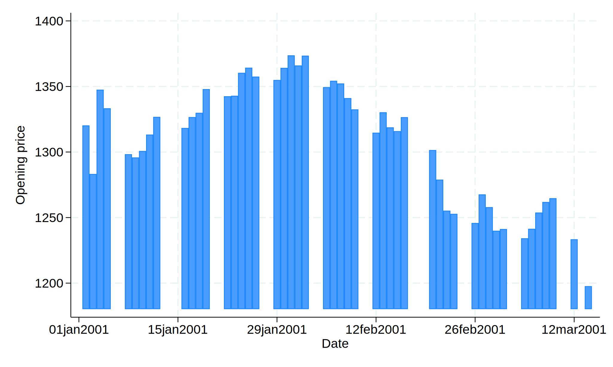
. use https://www.stata-press.com/data/r18/nlsw88, clear
. graph bar wage, over(smsa) over(married) over(collgrad) scheme(`scheme')
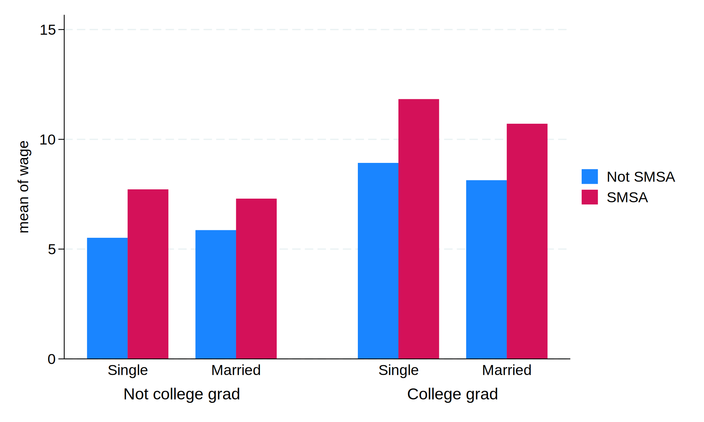
. use https://stats.oarc.ucla.edu/stat/stata/notes/hsb2.dta, clear
. collapse (mean) meanwrite= write (sd) sdwrite=write (count) n=write, by(race s
> es)
. generate hiwrite = meanwrite + invttail(n-1,0.025)*(sdwrite / sqrt(n))
. generate lowrite = meanwrite - invttail(n-1,0.025)*(sdwrite / sqrt(n))
. graph bar meanwrite, over(race) over(ses) asyvars scheme(`scheme')
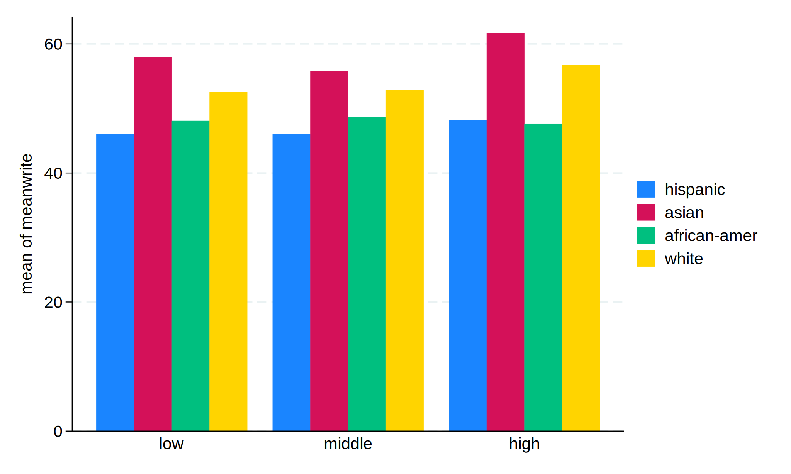
. sysuse pop2000, clear
. list agegrp maletotal femtotal
. replace maletotal = -maletotal/1e+6
. replace femtotal = femtotal/1e+6
. twoway bar maletotal agegrp, horizontal xvarlab(Males) ///
> || bar femtotal agegrp, horizontal xvarlab(Females) ///
> || , ylabel(1(1)17, angle(horizontal) valuelabel labsize(*.8)) ///
> xtitle("Population in millions") ytitle("") ///
> xlabel(-10 "10" -7.5 "7.5" -5 "5" -2.5 "2.5" 2.5 5 7.5 10) ///
> legend(label(1 Males) label(2 Females)) ///
> title("US Male and Female Population by Age") ///
> subtitle("Year 2000") ///
> note("Source: U.S. Census Bureau, Census 2000, Tables 1, 2 and 3", sp
> an) ///
> scheme(`scheme')

. sysuse nlsw88, clear
. graph bar wage if occ<9, over(occ) asyvars over(union) scheme(`scheme')
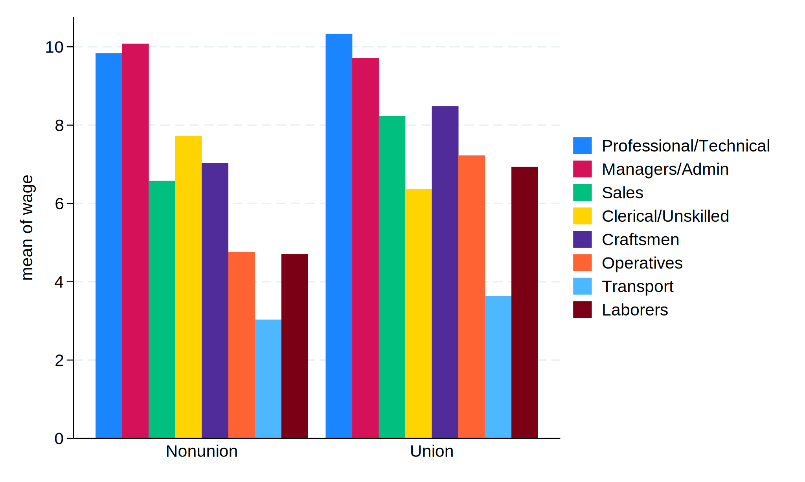
. use https://www.stata-press.com/data/r17/bplong, clear
. graph box bp, over(when) over(sex) ///
> ytitle("Systolic blood pressure") ///
> title("Response to Treatment, by Sex") ///
> subtitle("(120 Preoperative Patients)" " ") ///
> note("Source: Fictional Drug Trial, StataCorp, 2003") ///
> scheme(`scheme')
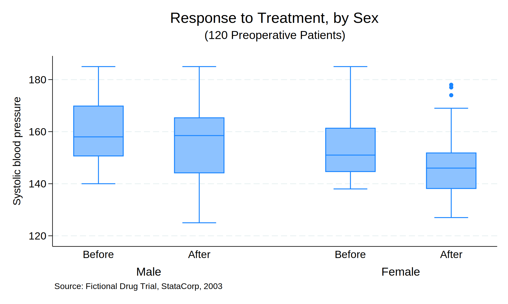
. use https://www.stata-press.com/data/r17/bpwide, clear
. graph box bp_before bp_after, over(sex) scheme(`scheme')
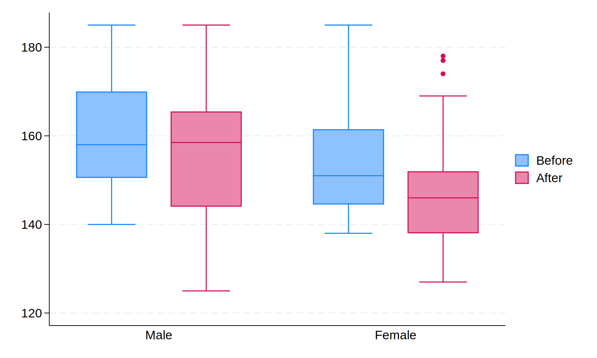
. sysuse auto, clear
. sc mpg price || mband mpg price, xline(1500) yline(25) scheme(`scheme')
. sysuse sandstone, clear
. sc depth northing if collection == 1 || ///
> sc depth northing if collection == 2, xline(75000) yline(7820) scheme(
> `scheme')
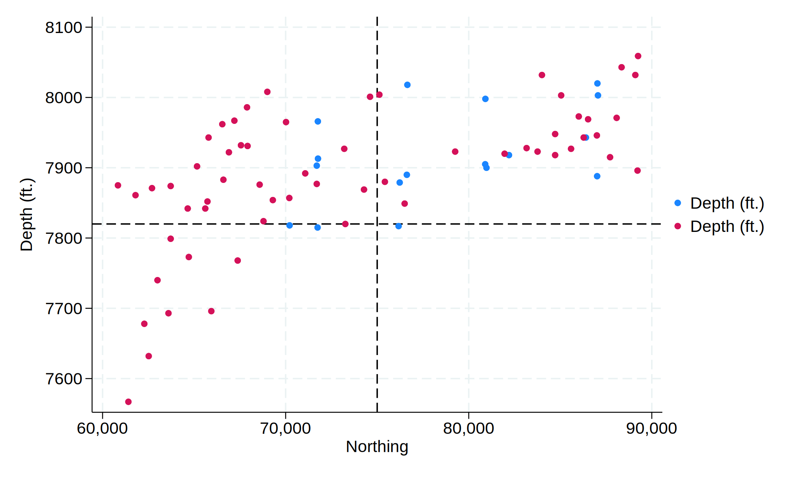
. sysuse auto, clear
. twoway lfitci mpg weight || scatter mpg weight, scheme(`scheme')
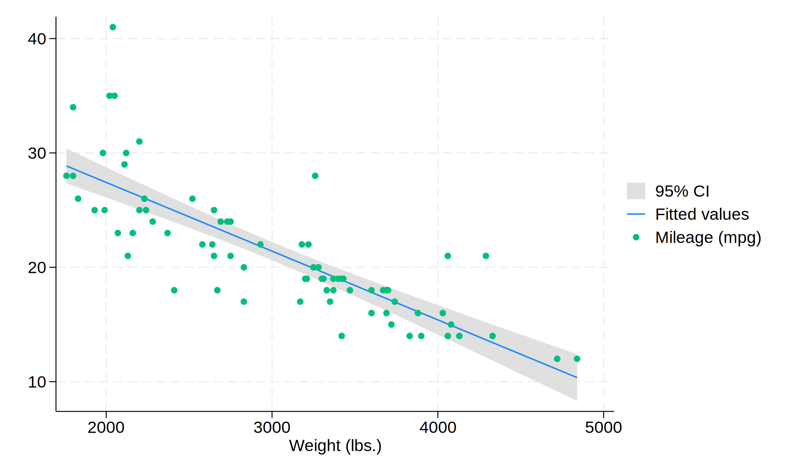
. clear
. infile str14 country setting effort change using https://data.princeton.edu/ww
> s509/datasets/effort.raw, clear
. gen pos=3
. replace pos = 11 if country == "TrinidadTobago"
. replace pos = 9 if country == "CostaRica"
. replace pos = 2 if country == "Panama" | country == "Nicaragua"
.
. graph twoway (lfitci change setting) ///
> (scatter change setting, mlabel(country) mlabv(pos) ) ///
> , title("Fertility Decline by Social Setting") ///
> ytitle("Fertility Decline") ///
> legend(ring(0) pos(5) order(2 "linear fit" 1 "95% CI"))
>
. clear
. webuse nhanes2, clear
. qui {
. marginsplot, scheme(`scheme')

. sysuse auto, clear
. histogram mpg, discrete by(foreign) scheme(`scheme')
. sysuse auto, clear
. histogram mpg, discrete by(foreign) scheme(`scheme')
. sysuse voter, clear
. histogram candi [freq=pop], discrete fraction ///
> by(inc, total) gap(40) xlabel(2 3 4, valuelabel) scheme(`scheme')